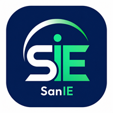

Offline
SanIE Finance Manager
You're offline
Some features need an internet connection. Previously available content may still be accessible.

Some features need an internet connection. Previously available content may still be accessible.